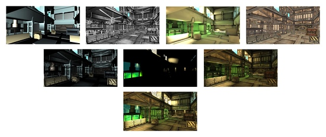

Rendering Optimizations
This section introduces the technicalities of rendering optimization. It shows how to bake lighting results for better performance, and how the developers of Shadowgun levered high-contrast textures, with lighting baked-in, to make their game look great. If you are looking for general information on what a mobile-optimized game looks like, check out the Graphics Methods page.
Get Artsy!
Sometimes optimizing the rendering in your game requires some dirty work. All of the structure that Unity provides makes it easy to get something working fast, but if you require top notch fidelity on limited hardware, doing things yourself and sidestepping that structure is the way to go, provided that you can introduce a key structural change that makes things a lot faster. Your tools of choice are editor scripts, simple shaders, and good old-fashioned art production.
How to Dive Under the Hood
First of all, check out this introduction to how shaders are written.
- Built in shaders
- Examine the source code of the built in shaders. Often, if you want to make a new shader that does something different, you can achieve it by taking parts of two already-existing shaders and putting them together.
- Surface Shader Debugging (
#pragma debug)- A CG Shader is generated from every surface shader, and then fully compiled from there. If you add
#pragma debugto the top of your surface shader, when you open the compiled shader via the inspector, you can see the intermediate CG code. This is useful for inspecting how a specific part of a shader is actually calculated, and it can also be useful for grabbing certain aspects you want from a surface shader and applying them to a CG shader.
- A CG Shader is generated from every surface shader, and then fully compiled from there. If you add
- Shader Include Files
- A lot of shader helper code is included in every shader, and usually it isn't used, but this is why you will sometimes see shaders calling functions like WorldReflectionVector which don't seem to be defined anywhere. Unity may has several built-in shader include files that contain these helper definitions. To find a specific function, you will need to search through all of the different includes.
- These files are a major part of internal structure that Unity uses to make it easy to write shaders; the files provide things like real time shadows, different light types, lightmaps, and multiple platform support.
- Hardware documentation
- Take your time to study Apple documentation on best practices for writing shaders. Note that we would suggest to be more aggressive with floating point precision hints however.
Shadowgun in-depth
Shadowgun is a great graphical achievement considering the hardware it runs on. While the art quality seems to be the key to the puzzle, there are a couple tricks to achieving such quality that programmers can pull off to maximize their artists' potential.
In the Graphics Methods page we used the golden statue in Shadowgun as an example of a great optimization; instead of using a normal map to give their statue some solid definition, they just baked lighting detail into the texture. Here, we will show you how and why you should use a similar technique in your own game.
Shader code for Real-Time vs Baked Golden Statue
// This is the pixel shader code for drawing normal-mapped
// specular highlights on static lightmapped geometry
// 5 texture reads, lots of instructions
SurfaceOutput o;
fixed4 tex = tex2D(_MainTex, IN.uv_MainTex);
fixed4 c = tex * _Color;
o.Albedo = c.rgb;
o.Gloss = tex.a;
o.Specular = _Shininess;
o.Normal = UnpackNormal(tex2D(_BumpMap, IN.uv_BumpMap));
float3 worldRefl = WorldReflectionVector (IN, o.Normal);
fixed4 reflcol = texCUBE (_Cube, worldRefl);
reflcol *= tex.a;
o.Emission = reflcol.rgb * _ReflectColor.rgb;
o.Alpha = reflcol.a * _ReflectColor.a;
fixed atten = LIGHT_ATTENUATION(IN);
fixed4 c = 0;
half3 specColor;
fixed4 lmtex = tex2D(unity_Lightmap, IN.lmap.xy);
fixed4 lmIndTex = tex2D(unity_LightmapInd, IN.lmap.xy);
const float3x3 unity_DirBasis = float3x3(
float3( 0.81649658, 0.0, 0.57735028),
float3(-0.40824830, 0.70710679, 0.57735027),
float3(-0.40824829, -0.70710678, 0.57735026) );
half3 lm = DecodeLightmap (lmtex);
half3 scalePerBasisVector = DecodeLightmap (lmIndTex);
half3 normalInRnmBasis = saturate (mul (unity_DirBasis, o.Normal));
lm *= dot (normalInRnmBasis, scalePerBasisVector);
return half4(lm, 1);
// This is the pixel shader code for lighting which is
// baked into the texture
// 2 texture reads, very few instructions
fixed4 c = tex2D (_MainTex, i.uv.xy);
c.xyz += texCUBE(_EnvTex,i.refl) * _ReflectionColor * c.a;
return c;


Render to Texel
The real-time light is definitely higher quality, but the performance gain from the baked version is massive. So how was this done? An editor tool called Render to Texel was created for this purpose. It bakes the light into the texture through the following process:
- Transform the tangent space normal map to world space via script.
- Create a world space position map via script.
- Render to Texture a fullscreen pass of a the entire texture using the two previous maps, with one additional pass per light.
- Average results from several different vantage points to yield something which looks plausible all around, or at least from common viewing angles in your game.
This is how the best graphics optimizations work. They sidestep tons of calculations by preforming them in the editor or before the game runs. In general, this is what you want to do:

- Create something that looks great, don't worry about performance.
- Use tools like Unity's lightmapper and editor extensions like Render to Texel and Sprite Packer to bake it down to something which is very simple to render.
- Making your own tools is the best way to do this, you can create the perfect tool suited for whatever problem your game presents.
- Create shaders and scripts which modulate your baked output to give it some sort of "shine"; an eye-catching effect to create an illusion of dynamic light.
Concept of Light Frequency

Just like the Bass and Treble of an audio track, images also have high-frequency and low-frequency components, and when you're rendering, it's best to handle them in different ways, similar to how stereos use subwoofers and tweeters to produce a full body of sound. One way to visualize the different frequencies of an image is to use the "High Pass" filter in Photoshop. Filters->Other->High Pass. If you have done audio work before, you will recognize the name High Pass. Essentially what it does is cut off all frequencies lower than X, the parameter you pass to the filter. For images, Gaussian Blur is the equivalent of a Low Pass.
This applies to realtime graphics because frequency is a good way to separate things out and determine how to handle what. For example, in a basic lightmapped environment, the final image is obtained by composite of the lightmap, which is low frequency, and the textures, which are high-frequency. In Shadowgun, low frequency light is applied to characters quickly with light probes, high frequency light is faked through the use of a simple bumpmapped shader with an arbitrary light direction.
In general, by using different methods to render different frequencies of light, for example, baked vs dynamic, per-object vs per-level, per pixel vs per-vertex, etc, you can create full bodied images on limited hardware. Stylistic choices aside, it's generally a good idea to try to have strong variation colors or values at both high and low frequencies.
Frequency in Practice: Shadowgun Decomposition

- Top Row
- Ultra-Low-Frequency Specular Vertex Light (Dynamic) | High Frequency Alpha Channel | Low Frequency Lightmap | High Frequency Albedo
- Mid Row
- Specular Vertex Light * Alpha | High Frequency Additive Details | Lightmap * Color Channel
- Bottom
- Final Sum
Note: Usually these decompositions refer to steps in a deferred renderer, but that's not the case here. All of this is done in just one pass. These are the two relevant shaders which this composition was based on:
Lightmapped with Virtual Gloss Per-Vertex Additive
Shader "MADFINGER/Environment/Virtual Gloss Per-Vertex Additive (Supports Lightmap)" {
Properties {
_MainTex ("Base (RGB) Gloss (A)", 2D) = "white" {}
//_MainTexMipBias ("Base Sharpness", Range (-10, 10)) = 0.0
_SpecOffset ("Specular Offset from Camera", Vector) = (1, 10, 2, 0)
_SpecRange ("Specular Range", Float) = 20
_SpecColor ("Specular Color", Color) = (0.5, 0.5, 0.5, 1)
_Shininess ("Shininess", Range (0.01, 1)) = 0.078125
_ScrollingSpeed("Scrolling speed", Vector) = (0,0,0,0)
}
SubShader {
Tags { "RenderType"="Opaque" "LightMode"="ForwardBase"}
LOD 100
CGINCLUDE
#include "UnityCG.cginc"
sampler2D _MainTex;
float4 _MainTex_ST;
samplerCUBE _ReflTex;
#ifdef LIGHTMAP_ON
float4 unity_LightmapST;
sampler2D unity_Lightmap;
#endif
//float _MainTexMipBias;
float3 _SpecOffset;
float _SpecRange;
float3 _SpecColor;
float _Shininess;
float4 _ScrollingSpeed;
struct v2f {
float4 pos : SV_POSITION;
float2 uv : TEXCOORD0;
#ifdef LIGHTMAP_ON
float2 lmap : TEXCOORD1;
#endif
fixed3 spec : TEXCOORD2;
};
v2f vert (appdata_full v)
{
v2f o;
o.pos = UnityObjectToClipPos(v.vertex);
o.uv = v.texcoord + frac(_ScrollingSpeed * _Time.y);
float3 viewNormal = UnityObjectToViewPos(v.normal);
float3 viewPos = UnityObjectToViewPos(v.vertex);
float3 viewDir = float3(0,0,1);
float3 viewLightPos = _SpecOffset * float3(1,1,-1);
float3 dirToLight = viewPos - viewLightPos;
float3 h = (viewDir + normalize(-dirToLight)) * 0.5;
float atten = 1.0 - saturate(length(dirToLight) / _SpecRange);
o.spec = _SpecColor * pow(saturate(dot(viewNormal, normalize(h))), _Shininess * 128) * 2 * atten;
#ifdef LIGHTMAP_ON
o.lmap = v.texcoord1.xy * unity_LightmapST.xy + unity_LightmapST.zw;
#endif
return o;
}
ENDCG
Pass {
CGPROGRAM
#pragma vertex vert
#pragma fragment frag
fixed4 frag (v2f i) : SV_Target
{
fixed4 c = tex2D (_MainTex, i.uv);
fixed3 spec = i.spec.rgb * c.a;
#if 1
c.rgb += spec;
#else
c.rgb = c.rgb + spec - c.rgb * spec;
#endif
#ifdef LIGHTMAP_ON
fixed3 lm = DecodeLightmap (tex2D(unity_Lightmap, i.lmap));
c.rgb *= lm;
#endif
return c;
}
ENDCG
}
}
}
Lightprobes with Virtual Gloss Per-Vertex Additive
Shader "MADFINGER/Environment/Lightprobes with VirtualGloss Per-Vertex Additive" {
Properties {
_MainTex ("Base (RGB) Gloss (A)", 2D) = "white" {}
_SpecOffset ("Specular Offset from Camera", Vector) = (1, 10, 2, 0)
_SpecRange ("Specular Range", Float) = 20
_SpecColor ("Specular Color", Color) = (1, 1, 1, 1)
_Shininess ("Shininess", Range (0.01, 1)) = 0.078125
_SHLightingScale("LightProbe influence scale",float) = 1
}
SubShader {
Tags { "RenderType"="Opaque" "LightMode"="ForwardBase"}
LOD 100
CGINCLUDE
#pragma multi_compile _ LIGHTMAP_ON
#include "UnityCG.cginc"
sampler2D _MainTex;
float4 _MainTex_ST;
float3 _SpecOffset;
float _SpecRange;
float3 _SpecColor;
float _Shininess;
float _SHLightingScale;
struct v2f {
float4 pos : SV_POSITION;
float2 uv : TEXCOORD0;
float3 refl : TEXCOORD1;
fixed3 spec : TEXCOORD3;
fixed3 SHLighting: TEXCOORD4;
};
v2f vert (appdata_full v)
{
v2f o;
o.pos = UnityObjectToClipPos(v.vertex);
o.uv = v.texcoord;
float3 worldNormal = UnityObjectToWorldDir(v.normal);
float3 viewNormal = UnityObjectToViewPos(v.normal);
float4 viewPos = UnityObjectToViewPos(v.vertex);
float3 viewDir = float3(0,0,1);
float3 viewLightPos = _SpecOffset * float3(1,1,-1);
float3 dirToLight = viewPos.xyz - viewLightPos;
float3 h = (viewDir + normalize(-dirToLight)) * 0.5;
float atten = 1.0 - saturate(length(dirToLight) / _SpecRange);
o.spec = _SpecColor * pow(saturate(dot(viewNormal, normalize(h))), _Shininess * 128) * 2 * atten;
o.SHLighting = ShadeSH9(float4(worldNormal,1)) * _SHLightingScale;
return o;
}
ENDCG
Pass {
CGPROGRAM
#pragma vertex vert
#pragma fragment frag
fixed4 frag (v2f i) : SV_Target
{
fixed4 c = tex2D (_MainTex, i.uv);
c.rgb *= i.SHLighting;
c.rgb += i.spec.rgb * c.a;
return c;
}
ENDCG
}
}
}
Best Practices
GPU optimization: Alpha-Testing
Some GPUs, particularly ones found in mobile devices, incur a high performance overhead for alpha-testing (or use of the discard and clip operations in pixel shaders). You should replace alpha-test shaders with alpha-blended ones if possible. Where alpha-testing cannot be avoided, you should keep the overall number of visible alpha-tested pixels to a minimum.
iOS Texture Compression
Some images, especially if using iOS/Android PVR texture compression, are prone to visual artifacts in the alpha channel. In such cases, you might need to tweak the PVRT compression parameters directly in your imaging software. You can do that by installing the PVR export plugin or using PVRTexTool from Imagination Tech, the creators of the PVRTC format. The resulting compressed image file with a .pvr extension will be imported by the Unity editor directly and the specified compression parameters will be preserved. If PVRT-compressed textures do not give good enough visual quality or you need especially crisp imaging (as you might for GUI textures) then you should consider using 16-bit textures instead of 32-bit. By doing so, you will reduce the memory bandwidth and storage requirements by half.
Android Texture Compression
All Android devices with support for OpenGL ES 2.0 also support the ETC1 compression format; it's therefore encouraged to whenever possible use ETC1 as the prefered texture format.
If targeting a specific graphics architecture, such as the Nvidia Tegra or Qualcomm Snapdragon, it may be worth considering using the proprietary compression formats available on those architectures. The Android Market also allows filtering based on supported texture compression format, meaning a distribution archive (.apk) with for example DXT compressed textures can be prevented for download on a device which doesn't support it.
An Exercise
Download Render to Texel. Bake lighting on your model. Run the High Pass filter on the result in Photoshop. Edit the "Mobile/Cubemapped" shader, included in the Render to Texel package, so that the missing low-frequency light details are replaced by vertex light.